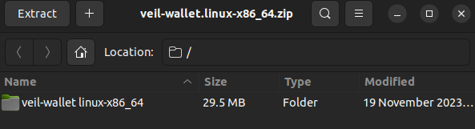
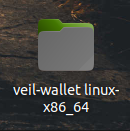
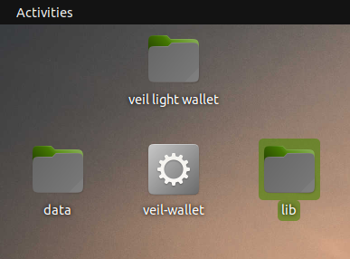
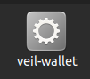
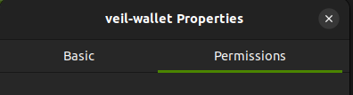
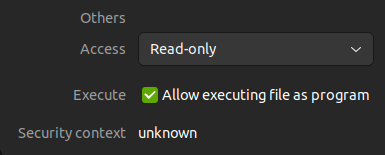
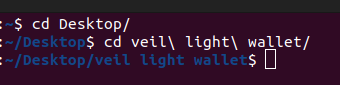
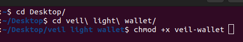
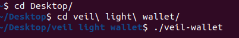

Installing the Veil Light Wallet on Linux (Ubuntu)
Follow this guide to install the Veil Light Wallet on your Linux machine running Ubuntu.
For this guide, I'll be using Ubuntu 22.04.3 LTS.
This guide is suitable for wallet version 1.0.7 or greater.
Requirements:
A computer running Ubuntu.
A stable internet connection.
Downloading the Veil Light Wallet:
Visit the GitHub repository to obtain the latest version of the light wallet: Veil Light Wallet Releases.
For Linux, look for the appropriate release for Ubuntu.
Select the Linux version.
Download the package suitable for Ubuntu.
Installing the Veil Light Wallet:
Extract the package to a location you know. For this example I'm saving it to my desktop for simplicity.

The files should already be in a folder named veil-wallet-linux-x86_64.

Light-wallet-folder.
If they are not in a folder, create a new folder and drag the files into the created folder.

New folder on top.
Downloaded wallet files to be
added to folder on bottom.
Once inside the folder you can right click on the veil-wallet icon.

Right-click gear icon.
Click properties.
Select the permissions tab.

Select the permissions tab to the right.
Then check Allow executing file as program.

Check the box next to Execute.
Alternatively open the terminal and navigate to your wallet location. If you have the folder on your desktop,
type cd Desktop and then cd veil\ light\ wallet/ (or whatever you named the folder).

Once in the folder, type chmod +x veil-wallet to make the veil-wallet file executable.

Launching Veil Light Wallet:
To start the wallet double-click the veil-wallet gear icon in your veil light wallet folder.
Veil-wallet gear icon.
To start the wallet in the terminal, use ./veil-wallet.

Wallet start example.
This should successfully launch your Veil Light Wallet.
Configure any initial settings, such as language.
Ensure you record and securely store your seed phrase generated during the setup.
You can also enter a seed phrase from a previous Veil wallet.
After entering your wallet phrase correctly, let your wallet load.
The wallet should be ready to use in a few seconds up to a half-hour.
Note that since Veil is private by default, this light wallet uses RingCT. CT and basecoin will not be usable, visible, or available with this light wallet.
Mining and staking are not available with the Light Wallet.
The light wallet uses "sv1" addresses, not "bv1" basecoin addresses.
Updating the Wallet:
Check for updates on the official Veil website, Discord, or GitHub periodically.
Enhancements, Additions, or Issues:
If you encounter issues or have suggestions for improvements, contribute on the official GitHub repository: Veil Light Wallet GitHub Issues.